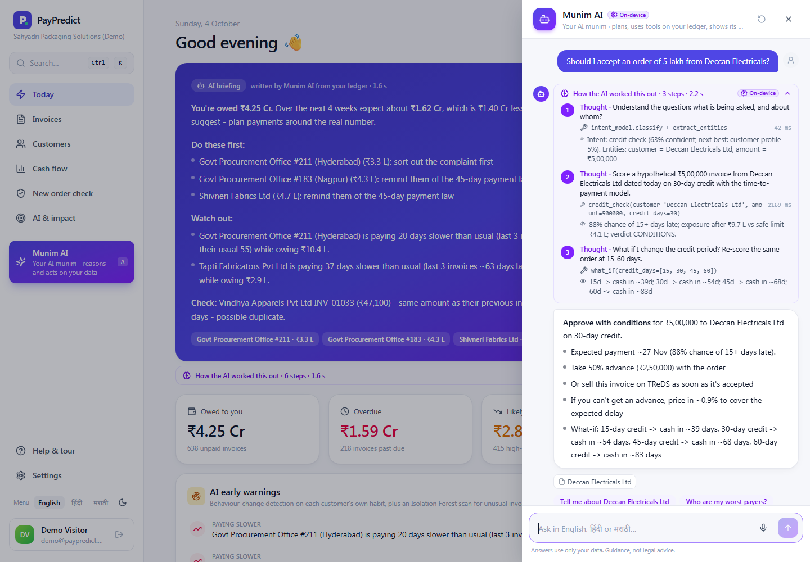
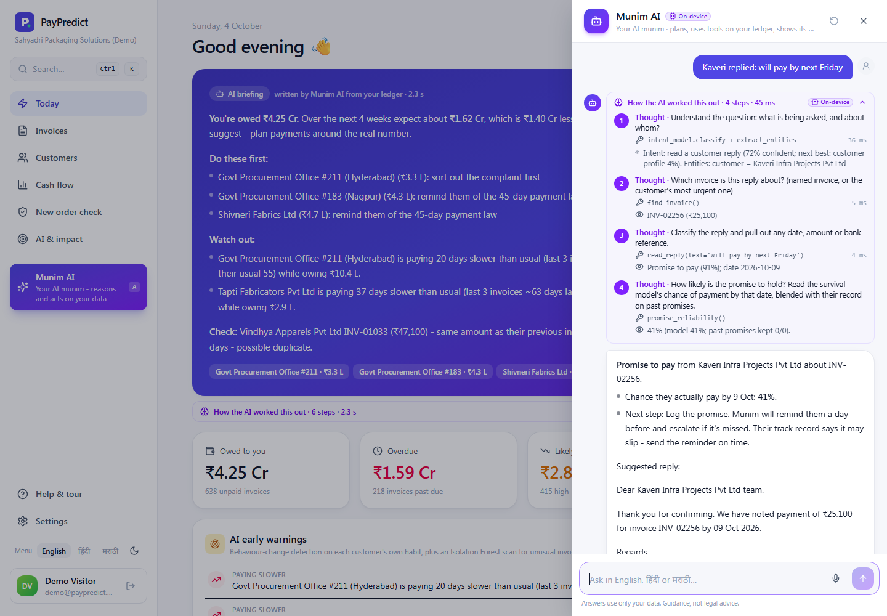
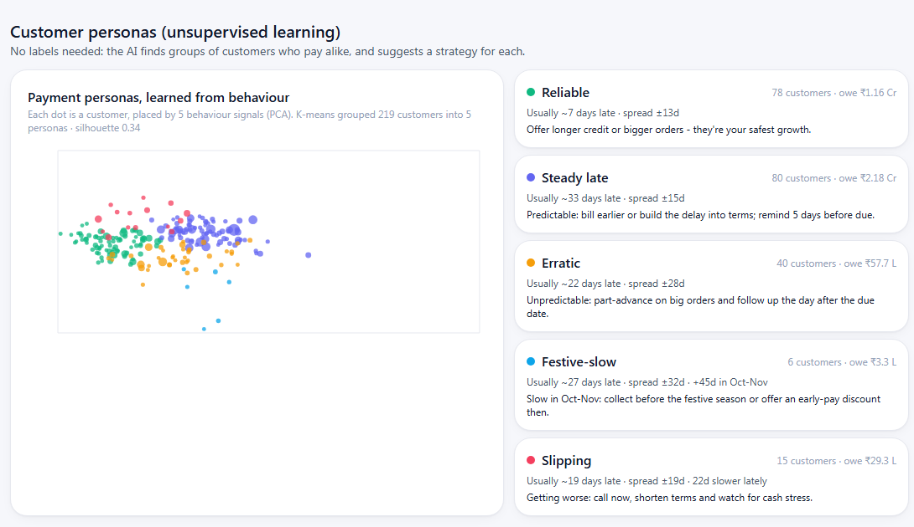
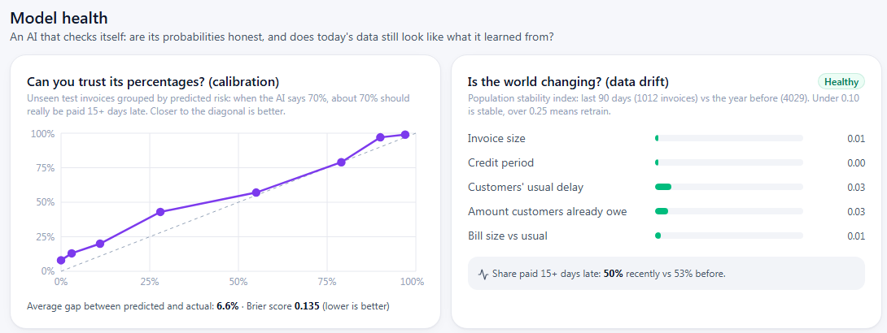

Micro and small enterprises in India sell largely on credit and are routinely paid weeks after the due date. The delay is funded through overdrafts, and the statutory protections available to them (the 45-day rule and interest under the MSMED Act, 2006, and Section 43B(h) of the Income-tax Act) are seldom used because collections are managed manually and without any view of which customers will actually pay late.
PayPredict is a working, deployed system that applies machine learning to this problem. From an ordinary accounting export it learns how each customer pays and, for every unpaid invoice, predicts the payment date with an uncertainty range. It explains each prediction, selects the least costly collection action, and drafts the message in English, Hindi or Marathi with a UPI payment link. An on-device conversational agent, Munim AI, answers questions by planning and calling tools on the business's own data and shows each reasoning step. Supporting models read customer replies, group customers into behavioural personas, flag anomalous invoices, and monitor the main model's calibration and data drift.
On a back-test with 2,735 invoices not seen in training, the model predicts the payment date with a mean absolute error of 9.5 days, compared with 21.4 days when the due date is assumed and 11.7 days for each customer's historical average. Its risk ranking reaches an AUC of 0.90 (baseline 0.84). Table 1 summarises these results, which are discussed in Section 7.2. The prototype is publicly accessible with a one-click demonstration account.
Measure (held-out test set)
PayPredict
Baseline
Mean absolute error of predicted payment date
9.5 days
21.4 days (due date)
Risk ranking, area under ROC curve
0.90
0.84 (customer average)
Share of late money in the riskiest 20% of invoices
41%
34%
Payments falling within the stated range
86%
-
Calibration error (mean gap, predicted vs. observed)
6.6%
-
Table 1. Summary of model performance (Section 7.2).
Contents
1. Problem Statement
Indian MSMEs cannot see in advance which of their customers will pay late. They discover delays only after due dates pass, follow up on the wrong invoices, and bridge the resulting cash gap with costly working-capital borrowing. Delayed receivables owed to MSMEs were estimated at ₹10.7 lakh crore in FY 2022 [5].
The legal framework favours the supplier. Under Section 15 of the MSMED Act, 2006, a buyer must pay a registered micro or small enterprise within the agreed period, which may not exceed 45 days; Section 16 then imposes compound interest at three times the bank rate notified by the Reserve Bank of India [1]. Since FY 2023-24, Section 43B(h) of the Income-tax Act defers the buyer's tax deduction for such dues until they are paid [2]. These provisions are rarely invoked, because suppliers lack a tool that tells them when and how to act.
2. Problem Understanding
2.1 Target users
The primary users are owner-managers of micro and small manufacturers, traders and service firms with an annual turnover of roughly ₹1 crore to ₹50 crore, selling business-to-business on 30 to 60-day credit. Such a firm typically has 50 to 500 credit customers, a single accountant, books maintained in Tally, Busy, Zoho Books or spreadsheets, and uses WhatsApp as its main channel with customers. Secondary users are the firm's chartered accountant, lenders and TReDS platforms that finance invoices.
2.2 Pain points and their causes
Table 2 links each pain point to its underlying cause and its consequence for the business; each cause is addressed by a component described in Section 6.
Pain point
Underlying cause
Consequence for the business
No early warning
Due dates carry no information about behaviour; ageing reports show only what is already late.
Unplanned cash shortfalls funded by overdraft at about 11-16% a year.
Misdirected follow-up
Invoices are chased by age or amount rather than by risk and money at stake.
Time spent on calls with little effect on collections.
Uniform reminders
No guidance on choosing between a reminder, a discount, TReDS or a legal notice.
Either money stays outstanding or customer relationships are damaged.
Unused legal rights
Statutory interest is tedious to compute and notices are difficult to draft.
Interest legally due is never claimed.
Credit given without evidence
New orders from slow payers are accepted on standard terms.
Exposure accumulates with the least reliable customers.
Low trust in software
Scores without explanation cannot be questioned.
Tools are abandoned after a few weeks.
Table 2. Pain points identified for the target users.
2.3 Why this is a machine-learning problem
Payment behaviour differs between customers, changes over time and depends on context such as season, invoice size, disputes and the amount already outstanding. A rule based on due dates cannot represent this, while a model trained on each business's own payment history can, and it can update its forecast every day as an invoice ages. In the sample business used in this report (a fictional packaging manufacturer in Pune with annual sales of ₹22.6 crore), 51% of invoices were paid more than 15 days late and ₹4.25 crore, roughly 58 days of sales, was outstanding.
3. Proposed Solution
PayPredict is a web application that turns a ledger export into a daily, prioritised and explained plan for collecting money. The business uploads its invoice history once (or uses the sample business); thereafter the system re-scores every open invoice each day and the owner acts on a short list. Table 3 describes how the system is used over a working day.
Stage
What the system does
What the user sees and does
Overnight
Re-scores every unpaid invoice, updates customer grades, runs 1,000 cash-flow simulations, checks for behaviour changes and anomalous invoices.
Nothing; the process is automatic.
Morning
Munim AI investigates the ledger in six steps and writes a briefing.
The realistic cash expected over four weeks, the three customers to contact first, and any warnings.
Action list
Ranks customers by money at stake and selects the least costly effective action for each, with reasons.
One card per customer; one tap sends a WhatsApp message in the customer's language with a UPI payment link.
Customer reply
Classifies the reply, extracts any promised date, amount or bank reference, and estimates whether the promise will be kept.
A suggested next step and reply; the promise is recorded with one click.
Questions
Munim AI plans, calls tools on the ledger and answers with its reasoning trace.
Questions such as "Should I accept a ₹5 lakh order from Deccan?" are answered with terms and evidence.
Over time
Measures days saved against its own earlier forecast, monitors calibration and drift, and retrains on new payments.
The AI & impact page reports accuracy and results.
Table 3. Use of the system over a working day.
3.1 Principal features
Payment-date prediction: expected date, likely range and probability of payment in each period for every invoice.
Explanations: the number of days each factor adds to an invoice's forecast, stated in plain language.
Action recommendation: reminder, early-payment offer, TReDS discounting, statutory reminder, MSME Samadhaan reference or formal notice, chosen by cost and escalated when ignored.
Munim AI: a conversational agent in English, Hinglish, Hindi and Marathi, with typed or voice input.
Reply reading, personas and anomaly checks: supporting models described in Section 6.
Cash-flow forecast and order check: weekly expected collections with a range, and an approve, conditions or hold verdict before credit is extended, including a what-if comparison of credit periods.
Getting paid: UPI payment links and QR codes without gateway fees, statutory interest computed per invoice, and a legal-notice generator.
The interface is designed for first-time users: a one-click demonstration, a guided tour of 22 steps, a getting-started checklist, explanations of terms such as TReDS and 43B(h), undo on every action, and layouts for desktop and mobile.
4. Innovation and Uniqueness
Existing tools for small businesses either send reminders on a fixed schedule or provide a static credit score. PayPredict differs in three respects. First, it predicts when each invoice will be paid as a full probability distribution rather than a single late or not-late label. Second, it couples that prediction to an explicit cost model built around Indian instruments (MSMED interest, Section 43B(h), TReDS and MSME Samadhaan). Third, every output can be inspected: predictions carry factor attributions, the agent exposes its reasoning, and the model's own calibration and drift are reported to the user. Table 4 compares these capabilities with the main categories of tools available to MSMEs today.
Capability
Accounting software
Collection tools
Credit bureaus
PayPredict
Payment date with a range for each invoice
No
Partial
No
Yes
Per-invoice explanation of the prediction
No
No
Score only
Yes
Cost-based choice among Indian levers
No
Fixed sequences
No
Yes
Agent that shows its reasoning
No
No
No
Yes
Understanding of customer replies
No
No
No
Yes
Self-monitoring (calibration, drift)
No
No
Not disclosed
Yes
Messages in Hindi and Marathi with UPI link
No
Partial
No
Yes
Table 4. Comparison with categories of existing tools, based on publicly described features.
5. Solution Architecture
The system is a single web service backed by one database (Figure 1). All models are trained per business and stored in the database, so the service itself holds no state and can be scaled horizontally.
Figure 1 shows the architecture as five layers. The data layer holds the imported ledger, the log of actions and replies, and customer details. In the learning layer, a feature pipeline converts this data into 18 point-in-time features that feed both the time-to-payment model and the unsupervised models. The intelligence layer turns predictions into explanations, recommended actions, cash forecasts and health checks. The interaction layer presents these through Munim AI, the reply reader and the user interfaces, and the platform layer hosts all components. Table 5 lists the technology used in each part.
Figure 1. System architecture by layer. Each layer consumes the output of the layer above; the platform layer hosts every component.
Layer
Technology
Frontend
React 18, TypeScript, Vite, Tailwind CSS, Recharts; English, Hindi and Marathi interface.
Backend and AI
Python 3.11, FastAPI, scikit-learn, pandas, NumPy, SciPy; bcrypt and JWT authentication; strict separation of each business's data; 54 automated tests.
Data and hosting
PostgreSQL (Neon) for data and serialised models; Docker on Render (Singapore region); HTTPS, content-security policy and rate limiting.
Optional language model
When an Anthropic API key is configured, Claude drives the same tool set; without a key, the on-device agent answers. The product does not depend on any external AI service.
Table 5. Technology stack.
6. AI and Technology Used
The system combines eight models and analytical components. The core is a survival model of payment time; the remaining components explain, act on, converse about, or check its output.
6.1 Time-to-payment model
Rather than classifying an invoice as late or not late, the model estimates the full distribution of its payment date. Time after the due date is divided into eight periods (on time, 1-7, 8-15, 16-30, 31-45, 46-60, 61-90 and over 90 days late), and a gradient-boosted classifier learns the discrete-time hazard h(k), the probability of payment in period k given that the invoice is still unpaid at its start [8]. The probability of payment in period k is then
P(paid in period k) = h(k) × ∏j < k (1 − h(j)),
from which the median (expected date), the 3rd and 97th percentiles (likely range) and the probability of payment more than 15 days late are derived. Unpaid invoices contribute the periods they have already survived (censoring) rather than being discarded, and forecasts are conditioned on each invoice's current age so they change as time passes. Eighteen features are computed using only information available on the invoice date, which prevents leakage: the customer's usual and recent delay, share of invoices paid more than 15 days late, worst delay, amount already outstanding and overdue, days since the last payment, length of the relationship, invoice size relative to the customer's usual, credit period, month, dispute and documentation flags, government status and TReDS registration. Figure 2 shows the resulting distributions for two invoices: for a reliable customer about 91% of the probability lies in the on-time period, whereas for a high-risk customer it is concentrated between 31 and 60 days after the due date.
On time1-78-1516-3031-4546-6061-9090+
Reliable customer High-risk customer
Figure 2. Predicted probability of payment by days after the due date for two invoices (model output).
Share paid 15+ days late+6.6 d
Usual delay+2.4 d
Open dispute+1.5 d
Last three payments late+1.2 d
Season (month raised)+1.2 d
Paperwork pending+1.2 d
Invoice size vs. usual+0.8 d
Customer segment+0.5 d
Figure 3. Global factor importance: mean days of delay added by each factor across 150 open invoices.
6.2 Explainability
For each invoice the model is re-evaluated with one factor at a time set to a typical value; the change in the expected delay is that factor's contribution (ablation attribution). Factors adding two or more days are converted into plain-language reasons, for example "usually pays about 27 days late", and shown as a bar chart in the invoice view. Averaged across open invoices, the same procedure yields the global importance in Figure 3, which is consistent with business intuition: the customer's track record dominates, followed by disputes, recent behaviour, season and documentation.
6.3 Cost-based decision engine
For each open invoice the engine compares the cost of waiting with the cost of each available action, using the business's own overdraft rate, and applies domain rules: a disputed invoice is resolved before payment is requested, government buyers receive the MSMED reminder but not the 43B(h) argument, and an escalation ladder (reminder, incentive, statutory reminder, formal notice) advances when two reminders are ignored. Statutory interest is computed as amount × [(1 + 3r/12)m − 1], where r is the RBI bank rate and m the number of months overdue. The same model also simulates 1,000 possible futures of all unpaid invoices to produce a weekly cash forecast with an 80% range, and re-scores a proposed order under alternative credit periods (what-if analysis).
6.4 Munim AI: the reasoning agent
A munim is the trusted accountant of a traditional Indian business, who knows who owes what and when to ask. Munim AI follows the ReAct pattern of interleaving reasoning steps with tool calls and observations [6]. Understanding is performed by an intent classifier (character n-gram TF-IDF with logistic regression over 17 intents, trained on English, Hinglish, Hindi and Marathi phrasings and robust to spelling variation) and by entity extraction (fuzzy matching of customer names, amounts such as "5 lakh", days, invoice numbers and language). A planner maps each intent to a skill, which is a short sequence of tool calls over the ledger. Every number in an answer therefore comes from the business's own data, and the complete trace is shown to the user. Figure 4 reproduces a trace from the deployed system.
Question: "Should I accept an order of 5 lakh from Deccan Electricals?"
#
Thought
Action (tool call)
Observation
1
Understand the question: what is being asked, and about whom?
87% chance of payment 15+ days late; exposure after the order ₹9.7 lakh against a safe limit of ₹4.1 lakh. Verdict: conditions.
3
What if the credit period changes? Re-score the same order at 15 to 60 days.
what_if(credit_days=[15, 30, 45, 60])
Expected days to cash: 39, 54, 69 and 84 respectively.
A
Answer. Approve with conditions: take a 50% advance (₹2,50,000) with the order, or sell the invoice on TReDS once it is accepted. A longer credit period would not reduce the delay; it would only push cash further out.
Figure 4. Reasoning trace produced by Munim AI for a credit decision (abridged).
6.5 Understanding customer replies
Customers usually answer reminders informally, for example "kal tak payment ho jayega" or "NEFT done, UTR 4521...". A second classifier assigns the reply to one of seven categories (promise to pay, already paid, dispute, documents required, cash difficulty, discount request, acknowledgement). Rule-based extractors recover the promised date from English, Hindi and Marathi expressions ("next Friday", "15 tarikh", "month end", "अगले हफ्ते"), part-payment amounts and bank references. For a promise, the survival model gives the probability that the invoice is paid by the promised date, which is blended with the customer's record of keeping earlier promises. The system then proposes the next step, records it with one click and drafts a reply in the customer's language. In the trace for "Kaveri replied: will pay by next Friday", the reply was classified as a promise with 91% confidence and the estimated probability of payment by Friday, 9 October was 41%, so the system advises sending the reminder on time.
6.6 Unsupervised models and monitoring
Payment personas. Each customer with at least five paid invoices is described by five signals: usual delay, variability of delay, share paid more than 15 days late, recent change and additional delay in October-November. K-means clustering with five clusters, initialised at interpretable prototypes and matched to names by the Hungarian algorithm, yields stable groups: Reliable, Steady late, Erratic, Festive-slow and Slipping, each with its own collection strategy. On the sample ledger 219 customers were grouped with a silhouette score of 0.34 (Figure 10).
Anomaly detection. An Isolation Forest [7] scores recent invoices on the ratio of amount to the customer's median, deviation from the customer's usual credit period and timing, and a rule flags possible duplicates (same amount within three days). Flagged invoices are checked before they are chased, since an error in the ledger otherwise becomes a dispute.
Model monitoring. Calibration is measured on the back-test by grouping invoices by predicted risk and comparing predicted with observed late rates (mean gap 6.6%, Brier score 0.135). Data drift is measured by the population stability index between invoices of the last 90 days and the preceding year; all monitored features currently show values below 0.10, the conventional threshold for stability. Figure 11 shows both checks: the calibration curve lies close to the diagonal, and every drift bar is in the stable range.
6.7 Data and responsible use
No public dataset of Indian MSME invoice payments exists. The prototype therefore uses a synthetic ledger of a fictional business: 12,193 invoices from 220 customers between October 2023 and September 2026, generated to reflect documented behaviour (persistent customer habits, slower government buyers, festive-season slowdowns, year-end effects, disputes, periods of cash stress and occasional extreme delays). The generating parameters are hidden from the model, which must learn them from invoice history exactly as it would from a real ledger. No message is sent without the user's approval, and generated legal notices are templates to be reviewed with a chartered accountant.
7. Prototype and Model Results
The prototype is deployed at paypredict-ad5f.onrender.com; selecting Try the live demo opens a shared demonstration business without registration. The free hosting tier suspends the service when idle, so the first request may take about 50 seconds. The figures below are taken from the running application. Figure 5 is the screen the user sees each morning, with the briefing written by Munim AI. Figures 6 and 7 show Munim AI answering a credit question and reading a customer's reply, each with its reasoning steps visible. Figure 8 is the detailed view of a single invoice, and Figure 9 the cash-flow forecast, in which the shaded band is the range from 1,000 simulations and the dashed line is the amount promised by due dates.
7.1 Application screens
Figure 5. Daily view: the briefing written by Munim AI (cash outlook, priorities, warnings and an anomaly check) above the key figures and early warnings.

Figure 6. Munim AI answering a credit question with its reasoning trace.

Figure 7. Munim AI reading a customer's reply and estimating whether the promise will hold.
Figure 8. Invoice view: expected date and range, probability by period, statutory interest and factor explanation.
Figure 9. Cash-flow forecast from 1,000 simulations against the amount promised by due dates.

Figure 10. Customer personas learned by K-means, projected onto two principal components.

Figure 11. Model monitoring: calibration on held-out invoices and data drift by feature.
7.2 Back-test results
The model was trained on 7,925 invoices raised before 15 September 2025 and evaluated on 2,735 later invoices whose outcome is known, scoring each as of its invoice date. Two baselines are reported: assuming payment on the due date (common practice) and each customer's historical average delay. As Table 6 shows, PayPredict is the most accurate on every measure.
Metric
Due-date assumption
Customer average
PayPredict
Mean absolute error of payment date (days)
21.4
11.7
9.5
Area under ROC curve, payment 15+ days late
-
0.84
0.90
Late money captured in riskiest 20% of invoices
-
34%
41%
Payments within the stated range
-
-
86%
Brier score (lower is better)
-
-
0.135
Table 6. Back-test on held-out invoices. The error is 56% lower than the due-date assumption and 19% lower than the customer average.
8. Business Impact
For the sample business (annual sales of ₹22.6 crore, about ₹6.2 lakh of sales per day, collection period of about 58 days), each day by which collection is accelerated releases working capital and reduces overdraft interest, as shown in Table 7.
Scenario
Cash released
Interest saved per year at 14%
Collection period reduced by 5 days (58 to 53)
about ₹31 lakh
about ₹4.3 lakh
Collection period reduced by 10 days (58 to 48)
about ₹62 lakh
about ₹8.7 lakh
Collection period reduced by 15 days (58 to 43)
about ₹93 lakh
about ₹13.0 lakh
Table 7. Illustrative impact (cash released = daily sales × days saved). These are scenarios, not measured results.
Planning on realistic numbers: the business plans on about ₹1.6 crore expected over four weeks instead of the ₹3.0 crore implied by due dates.
Recovery of statutory interest: interest under Section 16 of the MSMED Act is computed per invoice and included in notices.
Lower credit losses and effort: a few minutes a day directed at the right customers, and order checks that stop exposure accumulating with slow payers.
Impact is measured rather than assumed: the application records money collected within 30 days of each action and the days saved relative to the model's own forecast at the time of acting, so that a pilot produces evidence.
9. Feasibility
9.1 Implementation requirements
The only required input is an invoice list with payment dates, available from any accounting package. About 150 paid invoices across eight customers are sufficient to train a business-specific model; below that, a starter model is used. No installation is needed, the system runs on free cloud tiers, and the agent requires no paid AI service.
9.2 Challenges and mitigations
Table 8 lists the main risks to adoption and how the design addresses each.
Challenge
Mitigation
Data quality
Automatic column mapping, Indian date and amount formats, import warnings and the anomaly check.
Trust in AI output
Factor explanations, visible reasoning, published back-test, calibration and drift monitoring.
Legal sensitivity
Notices are templates with a recommendation to consult a chartered accountant; a relationship-first mode is available.
Data protection
Data is isolated per business and can be deleted, in line with the DPDP Act, 2023; demonstration data is fictional.
Table 8. Implementation challenges and mitigations.
9.3 Scalability and business model
The service is stateless and the database isolates each business, so capacity grows by adding containers. Scoring more than 600 invoices takes about one second with a single batched update, and the agent answers in about two seconds. A freemium subscription is proposed: free up to 50 customers, then approximately ₹499 to ₹1,999 per month by size, with referral income from TReDS platforms and lenders, and distribution through chartered accountants and accounting-software partners.
10. Future Scope
Pilots: deployment with five to ten MSMEs to measure accuracy and impact on real ledgers.
Integrations: direct synchronisation with Tally and Zoho Books; the WhatsApp Business API, with incoming replies read automatically by the reply model.
Learning from outcomes: uplift modelling to learn which action works for which persona, replacing fixed rules with estimated effects.
Buyer reputation network: consent-based, anonymised payment behaviour pooled across suppliers so that a first invoice to a new buyer is already scored.
New signals: GST filing patterns and Account Aggregator data as early indicators of buyer stress; embedded invoice financing; further Indian languages.
11. Conclusion
PayPredict converts an ordinary invoice ledger into an AI-assisted credit function for a small business. A survival model predicts when each invoice will be paid; an attribution method explains why; a decision engine built around Indian instruments selects the least costly action; Munim AI answers questions and reads customer replies while exposing its reasoning; and unsupervised models and monitoring keep the system and its users informed. The result is a working, deployed product rather than a concept, with a measured 56% reduction in payment-date error compared with the due-date assumption and a built-in method for proving its impact during a pilot.
Global Alliance for Mass Entrepreneurship and FISME (2022). Study on delayed payments to micro and small enterprises in India.
Yao, S. et al. (2023). ReAct: Synergizing reasoning and acting in language models. International Conference on Learning Representations. https://arxiv.org/abs/2210.03629.
Liu, F. T., Ting, K. M. and Zhou, Z.-H. (2008). Isolation forest. IEEE International Conference on Data Mining, 413-422. https://doi.org/10.1109/ICDM.2008.17.
Singer, J. D. and Willett, J. B. (1993). It's about time: Using discrete-time survival analysis to study duration and the timing of events. Journal of Educational Statistics, 18(2), 155-195.
Pedregosa, F. et al. (2011). Scikit-learn: Machine learning in Python. Journal of Machine Learning Research, 12, 2825-2830. https://scikit-learn.org.
Interest calculations use an RBI bank rate of 5.75%, which is configurable. All business names, invoices and amounts in this report are synthetic, and results on real ledgers will differ.